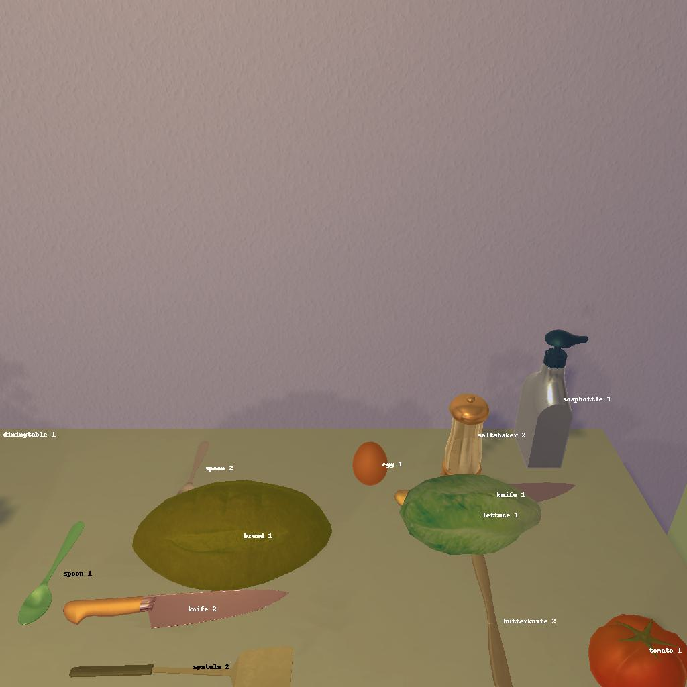

---------------------------------------------------------task: 14---------------------------------------------------------
--------------------------------------------------------------------------------------------------------------------------------------------------------------------
--------------------------------------------------------------------------------------------------------------------------------------------------------------------
Step:--------------------------------------------------------------------------6-------------------------------------------------------------------------------
----------------------------------------
VLM Prompt:
Image1:
**Instruction**
1. Analyze the provided image to identify all visible household objects, focusing on those relevant to the task description "cool some apple and put it in countertop."
2. Use the analysis of the image and the task hint "The agent must find an object of the desired type, pick it up, go to a fridge, cool the object with the fridge, then find the correct location to place it, and put it down there. The agent does not need to use the fridge button or open the fridge to cool the object, and the agent just needs to do action that is "cool the object with the fridge"." to answer the question: what is the most reasonable action in the choices for the task description "cool some apple and put it in countertop"?
4. Decide and write the answer using the template: The answer is: (i): , where i is the real number. If there is no desired object in the image, search every place based on **Initial Observation** to find the object. And if no one is exactly correct, choose a similar answer.
**Initial Observation**
You are in the middle of a room. Looking quickly around you, you can see microwave (1), countertop (1-2), cabinet (1-11), diningtable (1), drawer (1-3), sink (1), sinkbasin (1), toaster (1), stoveburner (1-4), fridge (1), coffeemachine (1), garbagecan (1)
**Answer Choices**
(1): go to countertop 1
(2): go to cabinet 1
(3): go to drawer 1
(4): go to sink 1
(5): go to cabinet 2
(6): go to cabinet 3
(7): go to sinkbasin 1
(8): go to cabinet 4
(9): go to cabinet 5
(10): go to drawer 2
(11): go to countertop 2
(12): go to toaster 1
(13): go to cabinet 6
(14): go to stoveburner 1
(15): go to cabinet 7
(16): go to stoveburner 2
(17): go to stoveburner 3
(18): go to stoveburner 4
(19): go to drawer 3
(20): go to cabinet 8
(21): go to cabinet 9
(22): go to cabinet 10
(23): go to coffeemachine 1
(24): go to cabinet 11
(25): go to garbagecan 1
(26): take bread 1 from diningtable 1
(27): take lettuce 1 from diningtable 1
(28): take tomato 1 from diningtable 1
(29): take soapbottle 1 from diningtable 1
(30): take knife 2 from diningtable 1
(31): take spatul2 from diningtable 1
(32): take saltshaker 2 from diningtable 1
(33): take butterknife 2 from diningtable 1
(34): take spoon 1 from diningtable 1
(35): take egg 1 from diningtable 1
(36): take knife 1 from diningtable 1
(37): take spoon 2 from diningtable 1
(38): examine diningtable 1
**Answer**
Let's think step by step by following the instructions.
----------------------------------------
----------------------------------------
Original Response:
The task is to cool an apple and put it on the countertop. Analyzing the image provided, there are no apples visible on the dining table or in the immediate surroundings. Therefore, we must search for the apple based on the Initial Observation.
The Initial Observation lists a fridge, which is relevant to the task as we need to cool the apple. It also lists countertops, where we eventually need to place the apple. Since the image does not show an apple, we must look for it, likely in places where food is stored, such as the fridge or cabinets.
None of the answer choices directly indicate taking an apple or going to the fridge. However, if we think logically about where an apple might be found in a household setting, the fridge or cabinets are reasonable places to look.
Given the available choices and the task requirements, the most reasonable action would be to go to the fridge first to find and cool the apple. Since "go to fridge" is not an option, we can choose the closest action, which would be to go to the cabinet, as it is common to store fruits in cabinets if not stored in the fridge.
The answer is: (2): go to cabinet 1.
----------------------------------------
----------------------------------------
>>> Refine Original VLM Response and Get Pure Action: go to cabinet 1
----------------------------------------
-----------------------------------------------------------------
Running time: 9.212676048278809 seconds
Total Money: 4.599850000000002
-----------------------------------------------------------------
-----------------------------------------------------------------
Text Observation:You arrive at loc 2. The cabinet 1 is closed.
-----------------------------------------------------------------
UNSUCCEED